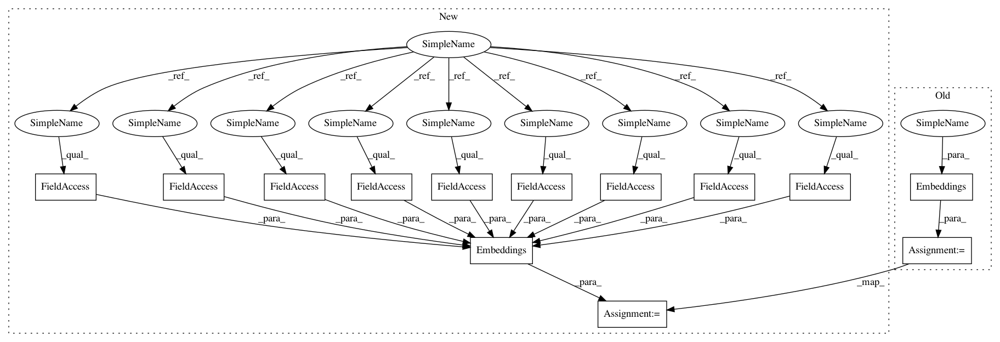

275f64eacf5787fd8c09592fa4ce18d0d14c6861,test/test_models.py,TestModel,embeddings_forward,#TestModel#Any#Any#Any#,116
Before Change
bsize: Batchsize of generated input
"""
vocab = self.get_vocab()
emb = onmt.Models.Embeddings(opt, vocab)
test_src, _, __ = self.get_batch(sourceL=sourceL,
bsize=bsize)
if opt.decoder_layer == "transformer":
input = torch.cat([test_src, test_src], 0)
After Change
bsize: Batchsize of generated input
"""
vocab = self.get_vocab()
emb = onmt.Models.Embeddings(
vocab, None,
opt.word_vec_size, opt.pre_word_vecs_enc, opt.fix_word_vecs_enc,
opt.feat_merge, opt.feat_vec_size, opt.feat_vec_exponent,
opt.position_encoding, opt.gpus, opt.dropout)
test_src, _, __ = self.get_batch(sourceL=sourceL,
bsize=bsize)
if opt.decoder_layer == "transformer":
input = torch.cat([test_src, test_src], 0)
In pattern: SUPERPATTERN
Frequency: 3
Non-data size: 13
Instances
Project Name: OpenNMT/OpenNMT-py
Commit Name: 275f64eacf5787fd8c09592fa4ce18d0d14c6861
Time: 2017-08-16
Author: bpeters@coli.uni-saarland.de
File Name: test/test_models.py
Class Name: TestModel
Method Name: embeddings_forward
Project Name: OpenNMT/OpenNMT-py
Commit Name: 55c80a0092f85b7fa0f3be4e1cff14defc7b96fd
Time: 2017-08-16
Author: bpeters@coli.uni-saarland.de
File Name: onmt/Models.py
Class Name: Decoder
Method Name: __init__
Project Name: OpenNMT/OpenNMT-py
Commit Name: 275f64eacf5787fd8c09592fa4ce18d0d14c6861
Time: 2017-08-16
Author: bpeters@coli.uni-saarland.de
File Name: test/test_models.py
Class Name: TestModel
Method Name: embeddings_forward
Project Name: OpenNMT/OpenNMT-py
Commit Name: 55c80a0092f85b7fa0f3be4e1cff14defc7b96fd
Time: 2017-08-16
Author: bpeters@coli.uni-saarland.de
File Name: onmt/Models.py
Class Name: Encoder
Method Name: __init__